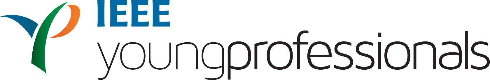

IEEE HIROSHIMA SHIKOKU FUKUOKA JT. SECT. YOUNG PROFESSIONALS
IEEE 広島四国福岡 YP，IEEE Student Branch 九州大学
アイデアコンペティションの御案内
September 30, 2024 Kyusyu, Japan
IEEE広島四国福岡YP Chair 片山 貴文
IEEE 広島支部、四国支部、福岡支部の皆様、
日頃よりYoung Professionalsの活動にご協力頂きまして、ありがとうございます。
IEEE 広島四国福岡 YPとIEEE Student Branch 九州大学が共催でアイデアコンペティションを開催させていただきます。
若手研究者や学生の皆様には、多数のご応募をお待ちしております。
提案募集 :Empower, Engage, Evolve (EEE)：
より良い明日のための若者主導の起業ソリューション。
持続可能な開発目標（SDGs）を支援する技術的なアイデアをお持ちですか？
SDGsイノベーション・コンペティションに参加して、
あなたのイノベーションが差し迫った環境や社会の課題にどのように対処できるかを実証しましょう。
テーマ:
Empower, Engage, Evolve (E3)は、IEEE Young Professionals (YP) 広島/四国/福岡と九州大学IEEE学生支部が主催する、
広島、四国、そして福岡をはじめとした日本全国の大学生・若手研究者を対象とした、
起業家的精神あふれるアイデアを募集するコンペティションです。
本プログラムは、SDGs（持続可能な開発目標）をはじめとする、
切実な社会的課題に取り組むため、若手の心に根差している創造性、革新性、そして情熱を活用することを目的としています。
私たちは、このコンペティションを通じて学生が変革の主体となり、
有意義な対話と協業に参加し、より持続可能で公平な未来のための革新的なソリューションを展開していくことを目指しています。
応募方法【入力期限：9月5日（木）】
[IEEE HSF YP Idea Competittion in Kyusyu 参加登録 (google.com)]
採択基準
• クリーンエネルギーや持続可能な都市など、特定のSDGsを推進するための技術を活用した革新的なアイデア
• 実用的で大きな影響をもたらす可能性のあるアイデア
• 持続可能な開発のための創造的なソリューションと技術を統合するプロジェクト
提案すべき理由
• 技術主導の持続可能なアイデアを、審査員や専門家に提案できる。
• 貴重な指導を受け、コンセプトを発展させることができる。
• IEEEのイベントに参加し、学生と交流する機会が得られる。
o 優勝賞金 25,000円
o 2位 15,000円
o 3位 10,000円
[ホームページはこちら]
